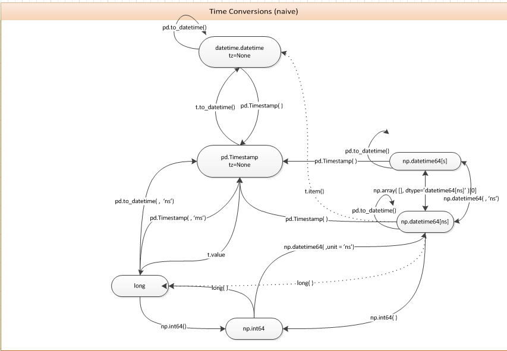

This documents all the tips, pitfalls I experienced along the way. Keep updating.
-
shell expansion insdie python with
subprocess.call - plotly using LaTex
- plotly cufflinks pandas dataframe customize the plot
- timezone
- From String to timestamp to epoch unix time
- datetime(python), pd.Timestamp(pandas), np.datetime64(numpy)
- To make a linspace of pd.Timestamp
- plotly tick setting: string format, number of ticks and location of ticks.
- plotly datetime type tick setting
- plotly change the padding size between subplots
- read in gz / gzip file
- plotly bar chart, use whether value is negative or positive to determine its color
- plotly subplot shared axis setting
- plotly remove missed dates from time series plot
- MultiIndex Dataframe select a particular (like the 2nd) level of the MultiIndex
-
Use
:orslice(None) - String for pandas datetime period and frequency
- Python Library for Probabilistic Graphical Models
- Python blocking and non-blocking subprocess calls
- nohup python that includes a nohup shell script
- ipython jupyter notebook pandas showing options
- matplotlib style and colors
- matplotlib backend choices
-
matplotlib with mpld3
twinxtwo side axes issue - Conda install python package CondaHTTPError Error
- utf8 unicode in string formatter & file read/write
- Use a relative path in a python module
- Mysterious Error pandas groupby error
- matplotlib add axes (subplot) on a made figure and sharex
- python parse webpage static content
- python get and parse webpage dynamic content
- python with statement and context manager type
- python selenium selector find element by multiple class names
- Speed up selenium and Time out
- An example of using regex parse table
- start and shutdown the selenium-server
shell expansion insdie python with subprocess.call
For python older than 2.7 (like the default on on DB cluster, but we can change the shebang to specify 2.7), we can only use subprocess.call().
when using shell expansion with this command, need have shell=True. Better way to have shell expansion inside python is to use module glob
But the following works, because it is not the shell expansion but the imagemagick does the expansion.
subprocess.call(['convert', '-delay', '10', '-loop', '10', 'temp_1*.png', 'cluster_size_anim.gif'])
plotly using LaTex
It is not possible to use LaTex in offline mode. (don't waste time to figure out a way to do that anymore, maybe wait for newer update)
It works when using the online mode.
plotly cufflinks pandas dataframe customize the plot
- using the
asFigure=Trueoption to get the handle of the figure - using
updatemethod to update the layout python dictionary - using
po.iplot()to plot the figure
Example:
figure = data.iplot(kind='scatter', fill=True, asFigure=True)
figure.layout.update(xaxis=dict(nticks=len(data.asfreq('M').index)))
po.iplot(figure)
timezone
A classical scenario is get timestamp in UTC, want to convert to local timezone. Panda can do it for time series
ts2 = ts1.
tz_localize('UTC').
tz_convert('US/Pacific')
the tz_localize('UTC') make it timezone aware, the tz_convert('US/Pacific') convert it to local timezone.
From String to timestamp to epoch unix time
Use pd.Timestamp() to convert string into pandas timestamp, then use value to epoch unix time in nanosecond
pd.Timestamp('2002-01-01').value/1e6
# this convert to epoch microseconds
datetime(python), pd.Timestamp(pandas), np.datetime64(numpy)
At least between python and pandas is easy:
from dateutil import parser as dateparser
from datetime import datetime
dt = dateparser.parse('2015-01-01') # python datetime
dt2 = datetime(2015, 1, 1) # Also python datetime
ts = pd.to_datetime(dt) # pandas Timestamp
dt = ts.to_pydatetime() # back to python datetime
A very good graph to show the converting relationship:

To make a linspace of pd.Timestamp
The pd.date_range(start=None, end=None, periods=None, freq='D') method will not work. This method is for different purpose.
rng = pd.date_range('1/1/2011', periods=72, freq='H')
# the same as pd.date_range(start, end, freq='D')
rng = pd.date_range(start, end)
To make the linespace of pd.Timestamp:
1. convert pd.Timestamp to long type
2. use np.linspace to make the array of long
3. convert back to pd.Timestamp array
4. Special note: If the original timestamp has timezone info, the step 3 need use different method to restore the timezone info
# the index of memory_df dataframe is of type pd.Timestamp
# the ticks_array is what we want linspace array of pd.Timestamp
# this is for cases without timezone information
ticks_array = pd.to_datetime(np.linspace(start=memory_df.index[0].value,
stop=memory_df.index[-1].value,
num=n_ticks,
endpoint=True))
# if need keep timezone info, to_datetime() method is not good anymore.
# for example the index of memory_df dataframe has timezone info
memory_df.index = memory_df.index.tz_localize('UTC').tz_convert('US/Pacific')
ticks_array = [pd.Timestamp(timetick, tz=memory_df.index.tz) for timetick in
(np.linspace(start=memory_df.index[0].value,
stop=memory_df.index[-1].value,
num=n_ticks, endpoint=True))]
plotly tick setting: string format, number of ticks and location of ticks.
- The easiest way to set
nticksandtickformat. Like the following example:
plot_layout = go.Layout(xaxis=dict(nticks=5,
tickformat='.2f'))
- The hard way is to set
tickmode='array', ticktext=[...], tickvals=[...].
plotly datetime type tick setting
directly use datetime datatype and the plotly tick setting options have subtle bugs, especially when dealing with timezone awared data.
The workaround:
1. convert the index to string using strftime (these string need to have high enough resolution like '%H:%M:%S:%f', otherwise, the plot will loose resolution because of having the same xaxis values)
2. generating ticktext and tickvals,specifing any format you like for ticktext.
Look the below example:
def visualization(job_id, basepath='.'):
memory_file = os.sep.join([basepath, 'memory_usage_'+job_id+'.csv'])
memory_df = pd.read_csv(memory_file)
timestamp = pd.to_datetime(memory_df.timestamp, infer_datetime_format=True)
memory_df = memory_df.set_index(timestamp).drop('timestamp', axis=1)
memory_df=memory_df/float(1024*1024*1024*1024)
memory_df.index = memory_df.index.tz_localize('UTC').tz_convert('US/Pacific')
# change the index to string for plotting purpose
memory_plot_df = memory_df.copy()
memory_plot_df.index = pd.Series(data=[ts.strftime('%H:%M:%S:%f') for ts in memory_plot_df.index],name='time')
mem_fig = memory_plot_df.iplot(asFigure=True)
# set the xaxis ticks
n_ticks = 10
picked_tick_index = ((np.linspace(start=0, stop=len(memory_plot_df.index)-1, num=n_ticks, endpoint=True))
.astype(int))
ticktext=[':'.join(ts.split(':')[:2]) for ts in memory_plot_df.index[picked_tick_index]] # only take hour and mins
tickvals=memory_plot_df.index[picked_tick_index]
mem_fig.layout.update(title='Memory usage for '+job_id,
yaxis=dict(title='TB'),
xaxis=dict(title='time',
tickmode='array',
ticktext=ticktext,
tickvals=tickvals))
po.iplot(mem_fig, show_link=False)
plotly change the padding size between subplots
Use specs and vertical_spacing or horizontal_spacing inside tls.make_subplots()
Example:
import plotly.tools as tls
figure = tls.make_subplots(rows=2, cols=1, shared_xaxes=True,
specs=[[{}], [{}]],
vertical_spacing=0.01)
read in gz / gzip file
import gzip
with gzip.open(file_path, 'rb') as f:
for line in f:
plotly bar chart, use whether value is negative or positive to determine its color
# here sh_MACD.ch is a time series, with values can be positive or negative.
# want to generate the bar chart that is red if its value is positive, or green if negative
colors=(sh_MACD.ch>0).map({True:'red', False:'green'}).values
trace_macd = go.Bar(x=sh_MACD.index, y=sh_MACD.ch, name = 'MACD',
marker=dict(color=colors))
Key points:
* use map to convert logical array to the color literals
* use values to get np.ndarray not pd.Series (because plotly need np.ndarray)
* use marker filed
plotly subplot shared axis setting
For example, if the subplot is 2 row 1 col, with shared x axis, the axis' names are: [(1,1) x1,y1 ], [(2,1) x1,y2 ]. To set the axis properties in the layout dictionary, using xaxis1 instead of xaxis.
The following example is from 01-Project/01-Study/PersonalProject/EDA.ipynb
overlay_plot['layout'].update(xaxis1=dict(type='category'))
plotly remove missed dates from time series plot
change the xaxis' type to category. (refer to the example above)
MultiIndex Dataframe select a particular (like the 2nd) level of the MultiIndex
In [65]: df
Out[65]:
A B C
first second
bar one 0.895717 0.410835 -1.413681
two 0.805244 0.813850 1.607920
baz one -1.206412 0.132003 1.024180
two 2.565646 -0.827317 0.569605
foo one 1.431256 -0.076467 0.875906
two 1.340309 -1.187678 -2.211372
qux one -1.170299 1.130127 0.974466
two -0.226169 -1.436737 -2.006747
select all two data. Two methods:
- MultiIndex is tuple, using
locand tuple to select, and useslice(None)inside tuple to represent:that we normally use (because:is not recognized inside tuple). The dataframe MultiIndex must be sorted first.
df=df.sort_index()
selection = df.loc[(slice(None), 'two'), :]
- Use
xsmethod and uselevelargument to specify the level. (note thatxsby default works on rows, if want to use it on columns, use theaxis=1argument)
selection = df.xs('two', level='second')
Use : or slice(None)
They mean the same thing, normally in [ ], we just use :, like [5, :]
However, inside tuple, : is not recognized, we have to use slice(None) instead.
String for pandas datetime period and frequency
Useful official documents
- frequency strings
- Anchored offset frequency strings
- Rolling forward or backward to snap on the anchors
Python Library for Probabilistic Graphical Models
Python blocking and non-blocking subprocess calls
Popen is nonblocking; call and check_call are blocking.
A good stackoverflow post explaining this
nohup python that includes a nohup shell script
- when using nohup with python, the output will be buffered, in order to see the output in real time using
python -uoption to turn off the output buffering
# calling the nohup python script like this:
nohup python -u subprocess_test.py 1>py_nohup.out 2>&1 &
- Do not use
nohupinside the python script for calling a shell script. Instead using thePopenwithshell=Trueoption, and redirects the stdout to a file.
The following example is located at Dropbox/01-Project/01-Study/playground/py_subprocess_call
The python script subprocess_test.py:
#!/usr/local/bin/python
from subprocess import Popen;
from time import sleep, strftime, localtime;
Popen('./keep_logging.sh 1>shell_logging_out 2>&1', shell=True)
for i in range(20):
print 'python logging {:d} time'.format(i)
print strftime("%a %b %d %H:%M:%S PDT %Y", localtime())
sleep(3)
The called shell script inside python is keep_logging.sh:
for ((c=1;c<=20 ;c++ ))
do
echo "shell logging $c times"
date
sleep 3
done
The command of running the python script (in turn running the shell script) is:
nohup python -u subprocess_test.py 1>py_nohup.out 2>&1 &
Using tail -f for both logging file shell_logging_out and py_nohup.out shows they are non-blocking and the output are in real time.
ipython jupyter notebook pandas showing options
- set jupyter notebook show float in dataframe with 2 digits precision (globally)
pd.options.display.float_format = '{:.2f}'.formatstackoverflow reference - get/set number of dataframe rows to show in notebook
pd.get_option("display.max_rows")
pd.set_option("display.max_rows",999)
matplotlib style and colors
- Here is a good post for showing how all the matplotlib styles look like.
- The recommended way of choosing color is through
seaborn. The office document which is very useful. - To temporarily change the matplotlib's default color palette and style, use
with:
with sns.color_palette("PuBuGn_d"):
# generate some plots with this color_palette
with plt.style.context(('ggplot')):
# generate some plots using the ggplot style
matplotlib backend choices
If a separate figure window needed (not the jupyter embedded window) use Qt5Agg as:
from matplotlib import pyplot as plt
plt.switch_backend('Qt5Agg')
If want to see the figure embedded inside the jupyter notebook, use magic line will be good enough:
%matplotlib notebook
matplotlib with mpld3 twinx two side axes issue
mpld3 can correctly convert matplotlib twinx figs, plotly cannot
import matplotlib as mpl
from matplotlib import pyplot as plt
import mpld3
import plotly.tools as tls
import plotly.offline as po
%matplotlib notebook
fig, ax = plt.subplots()
ax2 = ax.twinx()
ax.plot([1,3,2], 'b-')
ax2.plot([16, 4, 1], 'r:')
ax.set_ylabel('y1')
ax2.set_ylabel('y2')
ax2.patch.set_alpha(0.0) # This is the main trick for showing two axes
ax.set_xlabel('x')
fig.show()
###
mpld3.display(fig)
###
po.init_notebook_mode()
plotly_fig = tls.mpl_to_plotly(fig)
po.iplot(plotly_fig, show_link=False)
Conda install python package CondaHTTPError Error
Mysterious error like:
CondaHTTPError: HTTP 404 None
for url <None>
The remote server could not find the channel you requested.
The reason is that some package installed previous changed the ~/.condarc setting and added a channel, which "Listing channel locations in the .condarc file will override conda defaults"
the modified ~/.condarc that cause problem:
channels:
- https://repo.continuum.io/pkgs/
- defaults
just need delete the extra line, make it look like
channels:
- defaults
Problem solved.
utf8 unicode in string formatter & file read/write
- Use the
iopackage for utf8 file read/write
import io
with io.open(filename,'r',encoding='utf8') as f:
text = f.read()
# process Unicode text
with io.open(filename,'w',encoding='utf8') as f:
f.write(text)
- Use
ufor both strings in string formatter
s = u'\u2265'
# UnicodeEncodeError: 'ascii' codec can't encode character u'\u2265' in position 0...
print '{0}'.format(s)
# Correct
print u'{0}'.format(s)
- To make the code itself utf8 (such as including chinese characters inside the code), add this line at the beginning of the python file
# -*- coding: utf-8 -*-
Use a relative path in a python module
Use case: need refer to my personal key which is located in another folder resources
Store the absolute path to the module directory at the very beginning of the module:
package_directory = os.path.dirname(os.path.abspath(__file__))
with open(os.path.join(package_directory, '../resources/tk.key'), 'r') as f:
token = f.readline()
ts.set_token(token)
The same trick can be used for import a relative path module. This neat trick is from stackoverflow here
At the head of the python file:
# -*- coding: utf-8 -*-
import sys, os
import pymongo
try:
import fromTDX
from indicators import commonIndicator
from Const import Const
except Exception:
sys.path.append(os.path.join(os.path.dirname(__file__), '..'))
import fromTDX
from indicators import commonIndicator
from Const import Const
Mysterious Error pandas groupby error
For some version of Pandas actually this error will not occur. (pandas v.18.1 will have error, but v.19 has no problem)
- Symptom:
lib/python2.7/site-packages/pandas/core/groupby.pyc in reset_identity(values)
AttributeError: 'NoneType' object has no attribute '_get_axis'
Cause:
The apply function returnNone. When groupby then apply this func, this will cause issue.
A similar discussion on stackoverflowThe fix:
The apply func should return empty pd.DataFrame() or empty pd.Series().
Wrong:
def get_buy_in_grp(self, grp):
cond_1_m0 = (grp['MA_2_' + self.base_period] > grp['MA_5_' + self.base_period])
cond_1 = cond_1_m0 & (~cond_1_m0.shift().astype(bool))
cond_2 = (grp['MA_5_' + self.base_period] >= self.MA5_p * grp['MA_5_' + self.base_period].shift())
cond = cond_1 & cond_2
if ~(cond.any()):
return
return grp[cond]
Correct:
def get_buy_in_grp(self, grp):
cond_1_m0 = (grp['MA_2_' + self.base_period] > grp['MA_5_' + self.base_period])
cond_1 = cond_1_m0 & (~cond_1_m0.shift().astype(bool))
cond_2 = (grp['MA_5_' + self.base_period] >= self.MA5_p * grp['MA_5_' + self.base_period].shift())
cond = cond_1 & cond_2
if ~(cond.any()):
return pd.DataFrame() # return None may cause issues for the groupby().apply() action
return grp[cond]
matplotlib add axes (subplot) on a made figure and sharex
Use the fig.add_axes() method official document
To sharex, just sharex parameter in the method. Note that if adjustable parameter is set, in order to use sharex, adjustable = ‘datalim’
# the fig and ax_close etc are returned by another method
ax_close_pos = ax_close.get_position()
ax_macd_pos = [ax_close_pos.x0, ax_close_pos.y0, ax_close_pos.width, ax_close_pos.height/5.0]
ax_macd = fig.add_axes(ax_macd_pos, frameon=True, sharex=ax_close)
macd_df = (test_record.df[[col_name for col_name in test_record.df.columns
if col_name[-1]=='m']]
.drop_duplicates()
.set_index('Date_m'))
ax_macd.bar(macd_df[macd_df.MACD_m>0].index.values,
macd_df[macd_df.MACD_m>0].MACD_m.values,
width=15, color='salmon')
ax_macd.bar(macd_df[macd_df.MACD_m<0].index.values,
macd_df[macd_df.MACD_m<0].MACD_m.values,
width=15, color='steelblue')
ax_macd.grid(True)
mpld3.display()
python parse webpage static content
use requests to get the response from webpage, use BeautifulSoup to parse the returned content
For some webpage, like http://xueqiu.com/, it will check the header of the connect and will reject the connection if no appropriate header specified. The following is the one that I used to access http://xueqiu.com/
import requests
import pandas as pd
import io
hdr = {'User-Agent': 'Mozilla/5.0 (X11; Linux x86_64) AppleWebKit/537.11 (KHTML, like Gecko) Chrome/23.0.1271.64 Safari/537.11',
'Accept': 'text/html,application/xhtml+xml,application/xml;q=0.9,*/*;q=0.8',
'Accept-Charset': 'ISO-8859-1,utf-8;q=0.7,*;q=0.3',
'Accept-Encoding': 'none',
'Accept-Language': 'en-US,en;q=0.8',
'Connection': 'keep-alive'}
url = 'http://xueqiu.com/S/SH600033/historical.csv'
with requests.Session() as s:
s.headers.update(hdr)
r = s.get(url)
if r.status_code == 200: # 200 is of type int NOT type string
csv = r.content.decode('utf8') # the decode is a must
# Must use io.StringIO() to wrap it into a string buffer
df = pd.read_csv(io.StringIO(csv), parse_dates=['date'], infer_datetime_format=True)
df = df.drop('symbol', axis=1)
df.columns = [name.capitalize() for name in df.columns]
df = df.set_index('Date')
return df
else:
return None
python get and parse webpage dynamic content
SELENIUM
The best official documentation with python java examples
Some webpage's table is dynamically generated by js, like https://xueqiu.com/S/SH600652/FHPS.
Like in this stackoverflow post
(Note: this answer has an issue, instead of table.get_attribute('innerHTML'), it should be table.get_attribute('outerHTML'). Because pandas need the <table> </table> to understand that it is a table)
So the best solution is to use selenium WebDriver
Using conda install like:
conda install -c clinicalgraphics selenium
Here is a ppt about using selenium in java
- To use chrome WebDriver (which is very easy to use) need install ChromeDriver. Two different ways to get the ChromeDriver, I used this one:
brew install chromedriver
- To use firefox WebDriver, need install two things: Firefox and geckodriver. I used this:
brew install Caskroom/cask/firefo
brew install geckodriver
My complete example:
import pandas as pd
from pandas.io import html as pd_html
from contextlib import contextmanager
from selenium.webdriver.support.ui import WebDriverWait
from selenium.webdriver.support import expected_conditions as EC
from selenium.webdriver.common.by import By
from selenium import webdriver
@contextmanager
def wait_for_page_load(driver, timeout=10):
# I used chrome to get this xpath
check_ele = driver.find_element_by_xpath('//*[@id="center"]/div[2]/div[2]/div[2]/div')
check_text = check_ele.text
if check_text == u'暂无数据':
old_td = None
else:
old_td = driver.find_element_by_xpath('//*[@id="center"]/div[2]/div[2]/div[2]/div[1]/table/tbody/tr[1]/td[2]')
yield
# yield nothing, just want keep the current state of old_td
# when exit the with wait_for_page_load block, the next line
# make sure that the old_td will be changed, or 'no next page' element showing up
if old_td:
WebDriverWait(driver, timeout=timeout).until(EC.staleness_of(old_td))
@contextmanager
def open_driver():
driver = webdriver.Chrome() # ChromeDriver need be installed by Homebrew
driver.implicitly_wait(10) # This line will cause it to wait upto 10 seconds if an element is not there
yield driver
driver.quit()
with open_driver() as driver:
url_test = 'https://xueqiu.com/S/SZ000547/FHPS'
driver.get(url_test)
dividen_dfs = []
while True:
with wait_for_page_load(driver):
check_ele = driver.find_element_by_xpath('//*[@id="center"]/div[2]/div[2]/div[2]/div')
check_text = check_ele.text
if check_text == u'暂无数据':
break
table = driver.find_element_by_xpath('//table[@class="dataTable table table-bordered"]')
table_html = table.get_attribute('outerHTML')
df = pd_html.read_html(table_html, na_values = '-')
# below is just some normal dataframe munging
processed_df = df[0].T
processed_df.columns = processed_df.iloc[0,:]
processed_df = processed_df.drop(0, axis=0)
processed_df = processed_df.reset_index(drop=True)
dividen_dfs.append(processed_df)
# get the link and click on the link
link = driver.find_element_by_link_text(u'下一页')
link.click()
dividen_df = pd.concat(dividen_dfs).drop_duplicates().reset_index(drop=True)
dividen_df
Some special notes:
- Why we need wait? Because if there is asynchronous content like JS modifying the DOM after the initial page load is complete, the driver.get() may miss the target, since the target is loaded later Stackoverflow post.
- Implicitly_wait(): An implicit wait is to tell WebDriver to poll the DOM for a certain amount of time when trying to find an element or elements if they are not immediately available. The default setting is 0. Once set, the implicit wait is set for the life of the WebDriver object instance.
- Remember to close the
driver, otherwise it will have resource leaking - Chrome has a very cool feature, under
inspectmode, use right click you can directly copy XPath, Selection, Element etc.
Updated notes
- I heavily referred to this post for the much improved version of the code. The central idea is by checking
EC.staleness_of(old_td)to make sure that the new content has been generated in thewait_for_page_loadmethod. - In the python binding of
selenium, to get the text of the page element, actually need go through the property as.textinstead of using method.getText()which is different than the Java binding - It doesn't show in the code anymore, but the way of using
Locatoris construct a tuple, which is kind of confusing. Look at the below code snippet and pay attention to the double bracket
from selenium.webdriver.common.by import By
EC.presence_of_element_located((By.ID, "myDynamicElement"))
python with statement and context manager type
Official document for Context Manager
Official document for with statement Context Manager
In the above code snippet, I used the @contextmanager decorator to build the with open_driver() as driver: so that when the block of code exit, the driver will be automatically closed and preventing resource leaking.
python selenium selector find element by multiple class names
Imagine we have few elements as the followings:
<div class="value test" /><div class="value test " /><div class="first value test last" /><div class="test value" />
How XPath matches
Match only 1 (exact match)
driver.findElement(By.xpath("//div[@class='value test']"));Match 1, 2 and 3 (match class contains
value test, class order matters)driver.findElement(By.xpath("//div[contains(@class, 'value test')]"));Match 1, 2, 3 and 4 (as long as elements have class
valueandtest)driver.findElement(By.xpath("//div[contains(@class, 'value') and contains(@class, 'test')]"));
Also, in cases like this, Css Selector is always in favor of XPath (fast, concise, native).
Match 1
driver.findElement(By.cssSelector("div[class='value test']"));Match 1, 2 and 3
driver.findElement(By.cssSelector("div[class*='value test']"));Match 1, 2, 3 and 4
driver.findElement(By.cssSelector("div.value.test"));
Speed up selenium and Time out
I only tried with Firefox. According to a lot of post, the solution should be using the FirefoxProfile by set_preference('webdriver.load.strategy', 'unstable') as shown in this stackoverflow post. However, as I tested with firefox version 50.x, it does not work. According to this issue, it only work for firefox less than v. 46
This still not completely solved. I did find a way to make it a little bit better.
Check the available firefox configuration parameters: open firefox and input about:config in the url address field.
Also there is the official documents for the full list and explainations
The useful parameters that I found are:
permissions.default.image, 2, which make the loading of the page much fasternetwork.http.connection-timeout, 5, this one is very cool. It force the connect to break after the specified amount of time, so you don't have to wait till the full page to load if you can already find what you need. Reference to this post, then checked with firefox's about:config
To figure out what is the current firefox profile that the WebDriver is using:
firefox_p = webdriver.FirefoxProfile()
firefox_p.default_preferences # this is a dictionary
To do the improvement setting for firefox is:
@contextmanager
def open_fast_driver():
firefox_p = webdriver.FirefoxProfile()
firefox_p.set_preference('permissions.default.image', 2)
firefox_p.set_preference('network.http.connection-timeout', 1)
driver = webdriver.Firefox(firefox_profile=firefox_p)
yield driver
driver.quit()
UPDATE
I decided to downgrade the firefox to v.46 and see how it goes.
brew cask uninstall firefox # uninstall the previous version
brew tap goldcaddy77/firefox
brew cask install firefox-46
After install this version of Firefox, need add the following lines when use firefox WebDirver:
from selenium.webdriver.firefox.firefox_binary import FirefoxBinary
firefox_b = FirefoxBinary(r'/Applications/Firefox-46.app/Contents/MacOS/firefox')
driver = webdriver.Firefox(firefox_binary=firefox_b)
But, hey! You guess what!, it still not working even with Firefox V.46. And it breaks the little trick that I found to disable images too.
I uninstall the V46, and come back to what I did earlier.
cd ~
brew cask uninstall firefox-4
brew untap goldcaddy77/firefo
brew install Caskroom/cask/firefox
UPDATE, UPDATE
Tried to use Firefox add-on KillSpinners to stop loading the page after some time-out. Not successful. But learned how to use add-on/extension of selenium
For firefox extension on mac, it is located here: ~/Library/Application Support/Firefox/Profiles/[profile name]/extensions. For my Mac it is here:
firefox_KillSpinners_ext_path = '/Users/yugan/Library/Application Support/Firefox/Profiles/1qvac6rq.default/extensions/killspinners@byo.co.il.xpi'
The python code to use this extension is:
firefox_p = webdriver.FirefoxProfile()
firefox_p.add_extension(firefox_KillSpinners_ext_path)
firefox_p.set_preference('permissions.default.image', 2)
firefox_p.set_preference('extensions.killspinners.timeout', 10)
firefox_p.set_preference('extensions.killspinners.disablenotify', True)
The two parameters are found in the firefox about:config page.
The reason it failed is because this add-on blocked the thread.
UPDATE, UPDATE, UPDATE
The best update so far.
The solution is changing the WebDriver. No matter whether it is ChromeDriver or FirefoxDriver, they are too heavy and slow. We should use non-GUI drivers to speed it up. selenium has excellent support of using the following two non-GUI WebDriver. Check the official documents for Selenium-WebDriver support
- HtmlUnit - need be careful for the javascript handling
In order to use this WebDriver, need install and run Selenium Server:
brew install selenium-server-standalone
selenium-server -port 4444
Then in python code, specify Using Selenium with remote WebDriver (See the remote webdriver here), which should connect to: http://127.0.0.1:4444/wd/hub. Specify the desired_capabilities to HTMLUNITWITHJS. The desired_capabilities includes all broswers like (chrome, firefox, safari, phantomJS... etc)
Note: Always use
.copy()on the DesiredCapabilities object to avoid the side effects of altering the Global class instance
Also, checking the cmd line output can help find some useful parameters for the WebDrivers
- phatomJS- This so far is the best one. It respond the javascript pretty well. I find some configuration parameters which can further speed up the response
install:
brew install phantomjs
python code:
@contextmanager
def open_phantomJS_driver():
capabilities = webdriver.DesiredCapabilities.PHANTOMJS.copy()
capabilities['phantomjs.page.settings.loadImages'] = False
capabilities['phantomjs.page.settings.webSecurityEnabled'] = False
capabilities['phantomjs.page.settings.javascriptCanOpenWindows'] = False
capabilities['phantomjs.page.settings.javascriptCanCloseWindows'] = False
capabilities['phantomjs.page.settings.userAgent'] = 'Mozilla/5.0 (Macintosh; Intel Mac OS X) AppleWebKit/538.1 (KHTML, like Gecko) Chrome/55.0.2883.95 Safari/538.1'
driver = webdriver.Remote("http://localhost:4444/wd/hub", capabilities)
yield driver
driver.quit()
A blog for phantomJS
For the Browser Specific DesiredCapabilities, there is an official documents (not exhaustive though)
ChromeDriver available Capabilities and options
List of chrome command line switches, but seems outdated. At least the --timeout switch does not work anymore
I tested some config for the HtmlUnit and ChromeOptions, using the above links, but most of them are either not working or not relevant to what I am doing. Just keep these as a record if I need use them in the future
An example of using regex parse table
This table is not well formed for pandas to read. Combining use both the split() and regex make it much easier
import re
from dateutil import parser as date_parser
import pandas as pd
from contextlib import contextmanager
from selenium import webdriver
from selenium.webdriver.support.ui import WebDriverWait
from selenium.webdriver.support import expected_conditions as EC
from selenium.webdriver.common.by import By
@contextmanager
def open_fast_driver():
firefox_p = webdriver.FirefoxProfile()
firefox_p.set_preference('permissions.default.image', 2)
firefox_p.set_preference('network.http.connection-timeout', 1)
driver = webdriver.Firefox(firefox_profile=firefox_p)
yield driver
driver.quit()
zg_re = re.compile(ur'转增(\d+)股')
sg_re = re.compile(ur'送(\d+)股')
fh_re = re.compile(ur'派息(.+)元')
date_re = re.compile(ur'(\d{4}-\d{2}-\d{2})')
base_url = 'http://q.stock.sohu.com/cn/{}/fhsp.shtml'
code = '600589'
url = base_url.format(code)
table_xpath = '/html/body/div[4]/div[2]/div[2]/div[2]/div/div[2]/table'
table = None
with open_fast_driver() as driver:
driver.get(url)
d_table = WebDriverWait(driver, 30).until(EC.presence_of_element_located((By.XPATH,table_xpath)))
table = d_table.text
if table:
line_iter = iter(table.split('\n'))
records = []
while True:
record = dict()
date_m = None
try:
line = line_iter.next()
tokens = line.strip().split()
if len(tokens) == 1:
continue
if tokens[0] != u'除权除息日':
continue
if len(tokens) == 2:
next_line = line_iter.next()
date_m = date_re.search(next_line)
if not date_m:
date_m = date_re.search(line)
zg_m = zg_re.search(line)
sg_m = sg_re.search(line)
fh_m = fh_re.search(line)
record['Date'] = date_parser.parse(date_m.group(1))
if zg_m:
record['Zg'] = float(zg_m.group(1))/10.
if sg_m:
record['Sg'] = float(sg_m.group(1))/10.
if fh_m:
record['Fh'] = float(fh_m.group(1))/10.
records.append(record)
except StopIteration:
break
fhps_df = pd.DataFrame(records)
for field in ['Fh', 'Zg', 'Sg']:
if field not in fhps_df:
fhps_df.loc[:, field] = 0.0
fhps_df.loc[:, ['Fh', 'Zg', 'Sg']] = fhps_df.loc[:, ['Fh', 'Zg', 'Sg']].fillna(0.0)
fhps_df.loc[:, 'Ps'] = fhps_df['Zg']+fhps_df['Sg']
fhps_df = fhps_df.sort_values('Date')
fhps_df[['Date', 'Fh', 'Ps']]
start and shutdown the selenium-server
import subprocess
import time
from contextlib import contextmanager
@contextmanager
def open_selenium_server():
null_io = open('/dev/null')
server_proc = subprocess.Popen(['selenium-server', '-port', '4444'], stdout=null_io, stderr=null_io)
time.sleep(0.5)
yield
server_proc.terminate()
-
shell expansion insdie python with
subprocess.call - plotly using LaTex
- plotly cufflinks pandas dataframe customize the plot
- timezone
- From String to timestamp to epoch unix time
- datetime(python), pd.Timestamp(pandas), np.datetime64(numpy)
- To make a linspace of pd.Timestamp
- plotly tick setting: string format, number of ticks and location of ticks.
- plotly datetime type tick setting
- plotly change the padding size between subplots
- read in gz / gzip file
- plotly bar chart, use whether value is negative or positive to determine its color
- plotly subplot shared axis setting
- plotly remove missed dates from time series plot
- MultiIndex Dataframe select a particular (like the 2nd) level of the MultiIndex
-
Use
:orslice(None) - String for pandas datetime period and frequency
- Python Library for Probabilistic Graphical Models
- Python blocking and non-blocking subprocess calls
- nohup python that includes a nohup shell script
- ipython jupyter notebook pandas showing options
- matplotlib style and colors
- matplotlib backend choices
-
matplotlib with mpld3
twinxtwo side axes issue - Conda install python package CondaHTTPError Error
- utf8 unicode in string formatter & file read/write
- Use a relative path in a python module
- Mysterious Error pandas groupby error
- matplotlib add axes (subplot) on a made figure and sharex
- python parse webpage static content
- python get and parse webpage dynamic content
- python with statement and context manager type
- python selenium selector find element by multiple class names
- Speed up selenium and Time out
- An example of using regex parse table
- start and shutdown the selenium-server